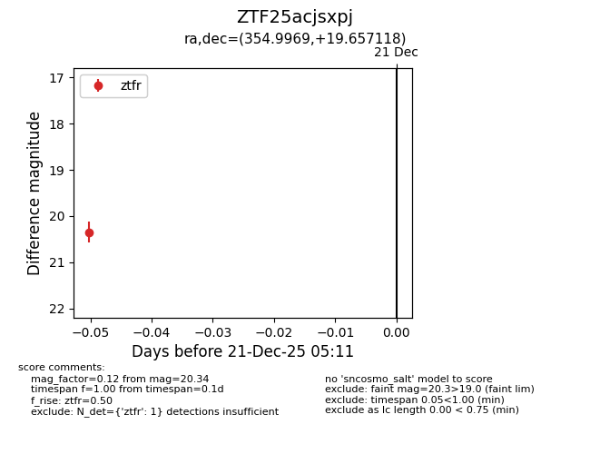
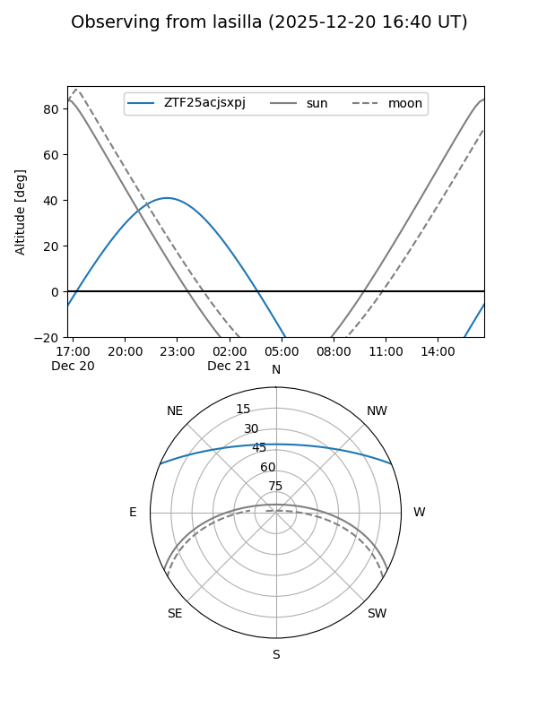
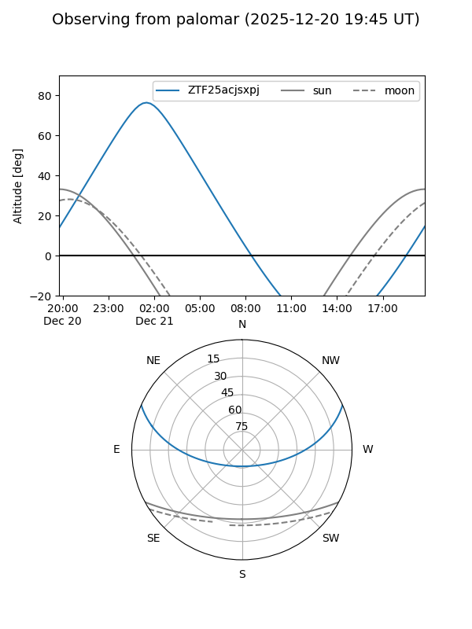

ZTF25acjsxpj
Target ZTF25acjsxpj at 2025-12-21 05:13
Aliases and brokers:
FINK: fink-portal.org/ZTF25acjsxpj
Lasair: lasair-ztf.lsst.ac.uk/objects/ZTF25acjsxpj
ALeRCE: alerce.online/object/ZTF25acjsxpj
alt names
ZTF25acjsxpj (ztf,fink_ztf)
Coordinates:
equatorial (ra, dec) = 354.9969,+19.65712
equatorial (HMS+DMS) = 23:39:59.26,+19:39:25.62
galactic (l, b) = (100.7395,-40.11558)
Flags:
Photometry:
last ztfr=20.34
1 ztfr detections
Lightcurve

Visibility


Additional plots